מסלולים קצרים ממקור יחיד — Dijkstra
⏱ זמן משוער: 60 דק'
0. האינטואיציה — הבעיה והרעיון החמדני
בעיית מסלולים קצרים ביותר ממקור יחיד (SSSP — Single-Source Shortest Paths) שואלת שאלה אחת פשוטה: נתון גרף מכוון וממושקל וקדקוד מקור s, מהו המרחק (משקל המסלול הקל ביותר) מ-s אל כל שאר הקדקודים? חשוב על משקלי הקשתות כזמני נסיעה בין צמתים, ועל s כנקודת המוצא שלך — אנחנו רוצים את הזמן הקצר ביותר לכל יעד.
אלגוריתם Dijkstra פותר את הבעיה בגישה חמדנית (greedy): הוא מנהל קבוצה S של קדקודים ש"נסגרו" — קדקודים שהמרחק הסופי אליהם כבר ידוע ונכון — ובכל צעד סוגר קדקוד נוסף: זה שהאומדן הנוכחי למרחקו הוא הקטן ביותר מבין הקדקודים שעדיין לא נסגרו. האינטואיציה: אם למדנו כבר את המרחקים הקטנים, הקדקוד הקרוב ביותר שנותר לא יכול "להשתפר" עוד דרך קדקוד רחוק יותר — כל עוד המשקלים אי-שליליים.
מקור: shortest-paths.pdf (עמ' 1–3), lec-dijkstra.pdf (עמ' 2)
1. הגדרות בסיס — w(p), δ(u,v) ומעגלים שליליים
נתון גרף מכוון ממושקל G = (V, E) עם פונקציית משקל w: E → ℝ על הקשתות. נגדיר (בדיוק כפי שהמרצה כותבת):
- משקל של מסלול (weight of a path) p = ⟨v₀, v₁, …, v_k⟩ הוא סכום משקלי קשתותיו: w(p) = Σ_{i=1}^{k} w(v_{i−1}, v_i).
- משקל המסלול הקצר ביותר (δ(u,v)): δ(u,v) = min{ w(p) | p מ-u ל-v } אם קיים מסלול, ו-∞ אחרת.
- מסלול קצר ביותר (a shortest path) מ-u ל-v הוא מסלול p שעבורו w(p) = δ(u,v).
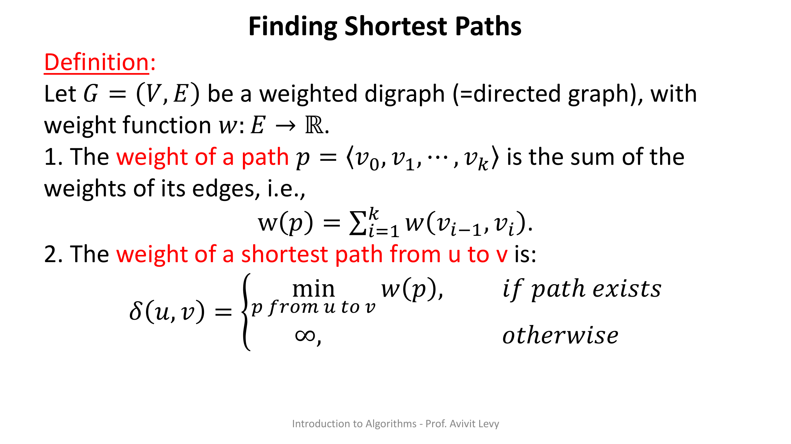
מה קורה עם מעגל שלילי? אם קיים מסלול מ-s ל-v שעובר דרך מעגל שסכום משקליו שלילי, אפשר "להסתובב" בו שוב ושוב ולהוזיל את המסלול ללא גבול — ולכן מגדירים δ(s,v) = −∞. זו בדיוק הסיבה שבגללה בעיית המסלולים הקצרים אינה מוגדרת היטב בנוכחות מעגלים שליליים.
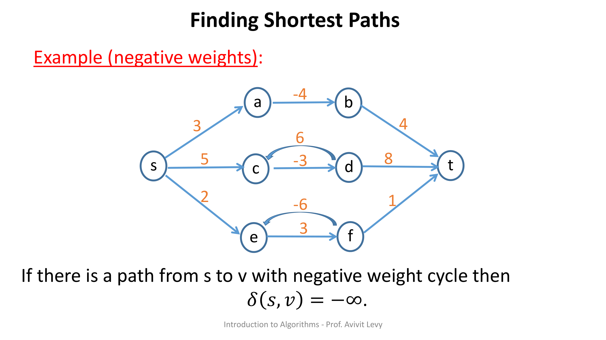
מקור: shortest-paths.pdf (עמ' 1–4), lec-dijkstra.pdf (עמ' 2)
2. תת-מבנה אופטימלי — הבסיס לכל האלגוריתם
לפני שנוכל "לבנות" מסלולים קצרים מקטעים, צריך משפט שמבטיח שהחלקים של מסלול קצר הם בעצמם קצרים. זו תכונת ה-optimal substructure (תת-מבנה אופטימלי).
הוכחה (בסתירה, שורה אחר שורה):
- נפרק את p לתת-מסלולים: v₁ ⤳(p_{1i}) v_i ⤳(p_{ij}) v_j ⤳(p_{jk}) v_k. לפי הגדרת משקל מסלול (המשקל אדיטיבי): w(p) = w(p_{1i}) + w(p_{ij}) + w(p_{jk}).
- נניח בשלילה שקיים מסלול חלופי p_{ij}` מ-v_i ל-v_j עם w(p_{ij}`) < w(p_{ij}).
- אז נבנה מסלול p` מ-v₁ ל-v_k: v₁ ⤳(p_{1i}) v_i ⤳(p_{ij}`) v_j ⤳(p_{jk}) v_k, שמשקלו w(p`) = w(p_{1i}) + w(p_{ij}`) + w(p_{jk}) < w(p) — סתירה לכך ש-p קצר ביותר. ∎
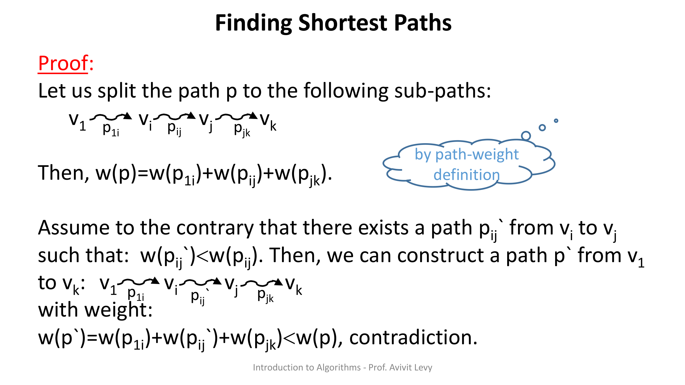
המסקנה (עמ' 9) — הבסיס ל-relaxation: אם מסלול קצר מ-s ל-v ניתן לפירוק ל-s ⤳(p`) u → v (תת-מסלול עד u ואז קשת יחידה u→v), אז:
δ(s,v) = δ(s,u) + w(u,v)
זהו הרעיון שמאחורי relaxation ומשוואת בלמן: המרחק הסופי לקדקוד = המרחק לקודמו + משקל הקשת האחרונה.
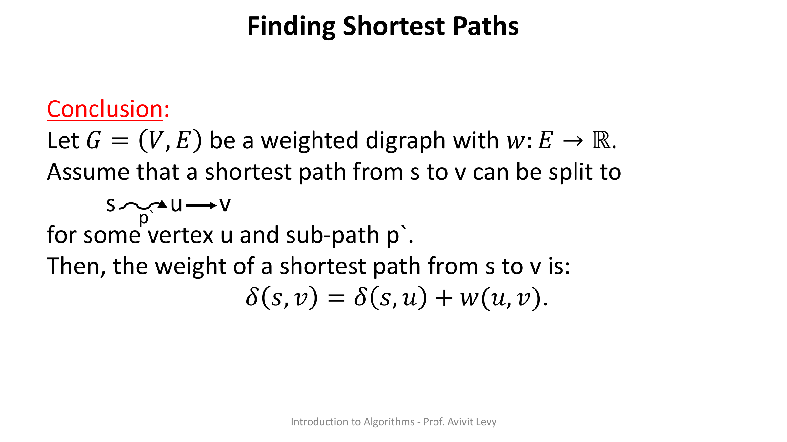
מקור: shortest-paths.pdf (עמ' 5–9)
3. פעולת RELAX ושלוש תכונותיה
לפני האלגוריתם עצמו, שני אבני היסוד: אתחול ו-הקלה.
- Initialize-Single-Source (ISS) — אתחול: d[s] = 0, d[v] = ∞ לכל v ≠ s, ו-π[v] = NIL.
- RELAX(u,v,w) — "ניסיון שיפור": אם d[u] + w(u,v) < d[v] אז מעדכנים d[v] ← d[u] + w(u,v) ו-π[v] ← u.
המרצה מבססת את נכונות Dijkstra על שלוש תכונות של RELAX:
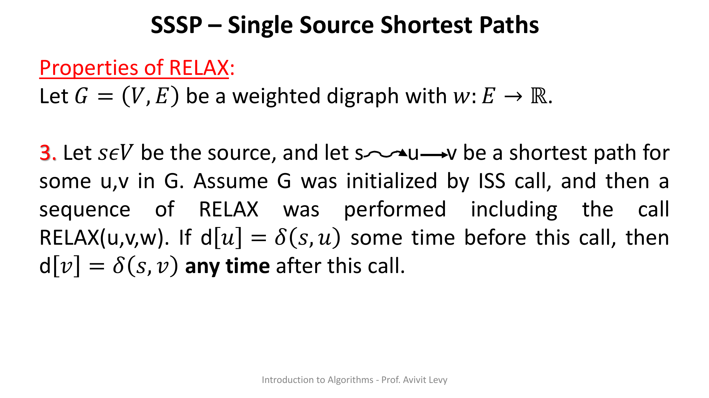
מקור: shortest-paths.pdf (עמ' 10–12)
4. אלגוריתם Dijkstra — הפסאודו-קוד
הנה הפסאודו-קוד כפי שהוצג בהרצאה (VERBATIM). שים לב לכותרת: W: E → ℝ⁺ — Dijkstra מניח משקלים אי-שליליים, בשונה מההגדרה הכללית w: E → ℝ.
DIJKSTRA(G, w, s) W: E → ℝ⁺
1. Initialize-single-source(G,s)
2. S ← ∅
3. Q ← V[G]
4. While Q ≠ ∅
5. do u ← Extract-Min(Q)
6. S ← S ∪ {u}
7. for each vertex v ∈ Adj[u]
8. do Relex(u, v, w)
הסבר שורה אחר שורה:
- שורה 1: Initialize-single-source — אתחול: לכל קדקוד d = ∞ ו-π = NIL, פרט למקור s שמקבל d = 0.
- שורה 2: S ← ∅ — קבוצת הקדקודים שכבר "סגרנו" (מרחקם הסופי נקבע) מתחילה ריקה.
- שורה 3: Q ← V[G] — תור העדיפויות Q מאותחל לכל קדקודי הגרף (המפתח הוא d).
- שורה 4: While Q ≠ ∅ — כל עוד יש קדקודים בתור.
- שורה 5: Extract-Min — מוציאים מהתור את הקדקוד עם ה-d המינימלי.
- שורה 6: S ← S ∪ {u} — סוגרים את u.
- שורות 7–8: לכל שכן v של u מבצעים RELAX(u,v,w) — עדכון (הקלה) של הקשת.
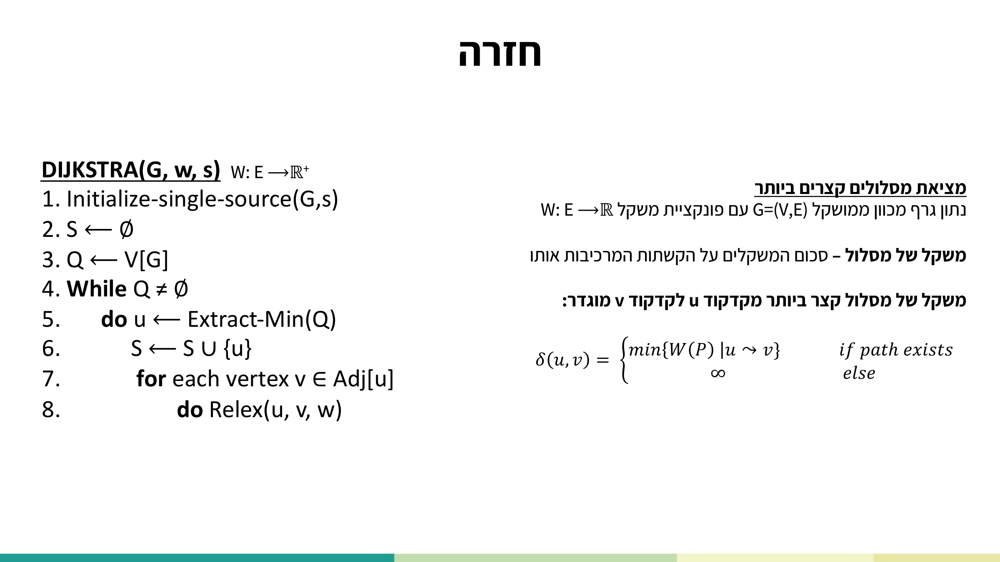
נסה בעצמך: הריצו את האלגוריתם צעד-אחר-צעד על גרף ההרצאה. שימו לב לטבלת d/π החיה, לתור, לקדקוד הנשלף ב-Extract-Min, ולקשתות שעוברות relaxation — ולמצב "משקל שלילי" שמראה איפה האלגוריתם נשבר.
מקור: lec-dijkstra.pdf (עמ' 3)
5. הרצה מלאה על גרף ההרצאה — צעד אחר צעד
הגרף (מכוון, ממושקל): קדקודים {S, A, B, C, T}, מקור S. הקשתות ומשקליהן:
S → A : 1 C → A : 1 A → B : 2
S → C : 2 C → B : 1 A → T : 8
C → T : 6 B → T : 1
מצב אתחול: d(S) = 0, כל השאר ∞; S = {}, Q = {S, A, C, B, T}.
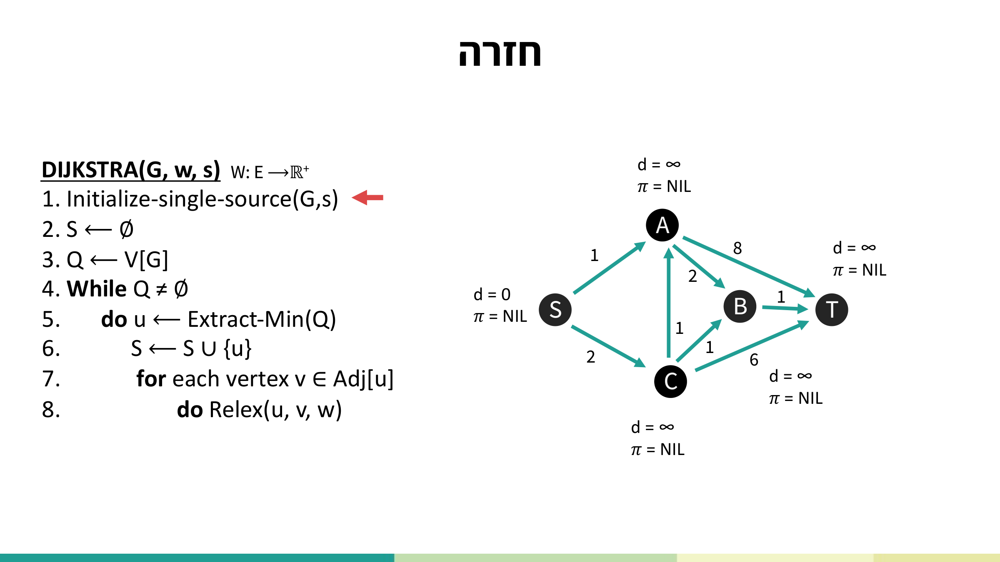
איטרציה 1 — u = S (d=0, המינימלי): סוגרים S, ומבצעים relaxation על שכניו:
- S→A (1): d(A): ∞ → 1, π(A)=S.
- S→C (2): d(C): ∞ → 2, π(C)=S.
איטרציה 2 — u = A (d=1): סוגרים A, relaxation על שכניו:
- A→T (8): d(T): ∞ → 9 (=1+8), π(T)=A.
- A→B (2): d(B): ∞ → 3 (=1+2), π(B)=A.
איטרציה 3 — u = C (d=2): סוגרים C, relaxation על A, B, T:
- C→A: 2+1=3 ≥ 1 → אין שינוי ל-d(A).
- C→B: 2+1=3 ≥ 3 → אין שינוי ל-d(B).
- C→T: 2+6=8 < 9 → d(T): 9 → 8, π(T)=C.
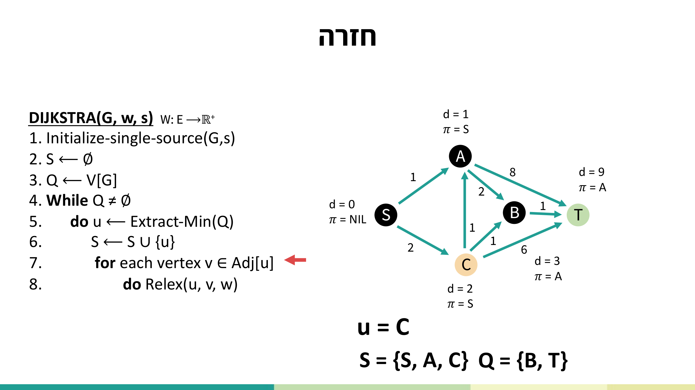
איטרציה 4 — u = B (d=3 < d(T)=8): סוגרים B, relaxation על T:
- B→T (1): 3+1=4 < 8 → d(T): 8 → 4, π(T)=B.
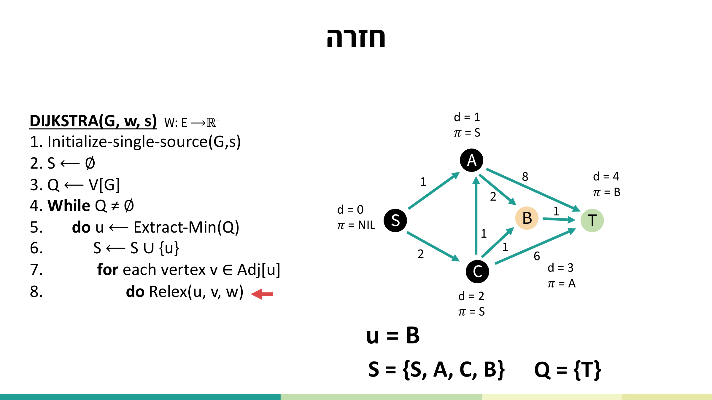
איטרציה 5 — u = T (Q = {T}): סוגרים T. ל-T אין שכנים יוצאים → אין relaxations. Q ריק → האלגוריתם מסתיים.
התוצאה הסופית:
| קדקוד | d (מרחק מ-S) | π (קודם) |
|---|---|---|
| S | 0 | NIL |
| A | 1 | S |
| C | 2 | S |
| B | 3 | A |
| T | 4 | B |
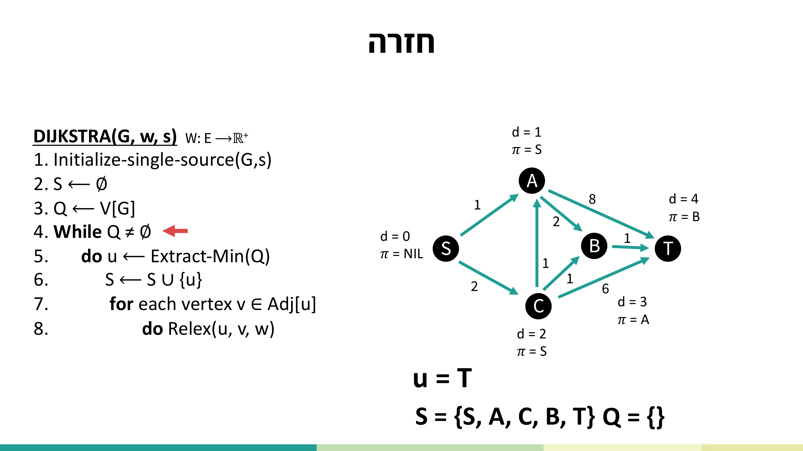
מקור: lec-dijkstra.pdf (עמ' 4–34)
6. סיבוכיות — תלויה במימוש תור העדיפויות
עלות Dijkstra נקבעת כמעט לחלוטין על-ידי מבנה הנתונים של התור. שתי הפעולות היקרות: Extract-Min (שורה 5, רץ |V| פעמים) ו-Decrease-Key בתוך RELAX (שורות 7–8, רץ |E| פעמים).
| מספר פקודה | Linear Queue | Binary Heap |
|---|---|---|
| 1 | Θ(|V|) | Θ(|V|) |
| 2 | Θ(1) | Θ(1) |
| 3 | Θ(|V|) | Θ(|V|) |
| 4×{5} (Extract-Min) | Θ(|V|²) | O(|V| log|V|) |
| 4×{6} | Θ(|V|) | Θ(|V|) |
| 4×{7-8} (RELAX) | Θ(|E|) | O(|E| log|V|) |
| סה"כ | Θ(|V|²) | O((|E| + |V|) log|V|) |
- תור ליניארי (מערך): Extract-Min עולה Θ(|V|) וקורה |V| פעמים → Θ(|V|²); RELAX על כל הקשתות Θ(|E|). סה"כ נשלט על-ידי Θ(|V|²).
- ערימה בינרית: Extract-Min עולה O(log|V|) ו-|V| פעמים → O(|V| log|V|); Decrease-Key בתוך RELAX עולה O(log|V|) ו-|E| פעמים → O(|E| log|V|). סה"כ O((|E|+|V|) log|V|).
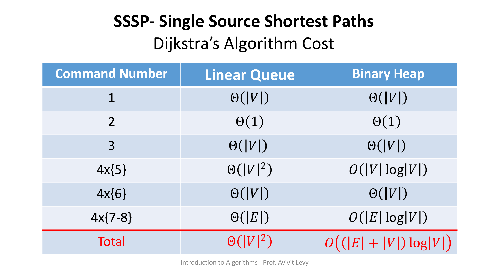
מקור: shortest-paths.pdf (עמ' 13)
7. נכונות Dijkstra — הוכחה בסתירה
אסטרטגיה: מספיק להראות שברגע שקדקוד u מוכנס ל-S מתקיים d[u] = δ(s,u) — כי לפי תכונה 2 הערך אז ננעל. נניח בשלילה שלא, וניקח את u להיות הקדקוד הראשון שכאשר הוכנס ל-S התקיים d[u] ≠ δ(s,u).
ההוכחה, שלב אחר שלב:
- u ≠ s: שכן s הוכנס ראשון, ואז d[s] = δ(s,s) = 0.
- מכיוון ש-u ≠ s, לפני שהוכנס u היה S ≠ ∅.
- קיים מסלול מ-s ל-u: אחרת היה d[u] = δ(s,u) = ∞ — בסתירה להנחה. אז יהי p מסלול קצר מ-s ל-u.
- הגדרת x, y: המסלול p מחבר קדקוד ב-S לקדקוד ב-V−S. יהי y הקדקוד הראשון על p שנמצא ב-V−S, ו-x קודמו על p (ב-S). הקשת (x,y) חוצה מ-S ל-V−S.
- d[y] = δ(s,y): קודמו x ב-S, ולכן d[x] = δ(s,x) (כי x הוכנס לפני u, ו-u הוא הראשון עם הפרה). כשהוכנס x בוצע RELAX על כל קשתותיו היוצאות, כולל (x,y) — ולפי תכונה 3 נובע d[y] = δ(s,y).
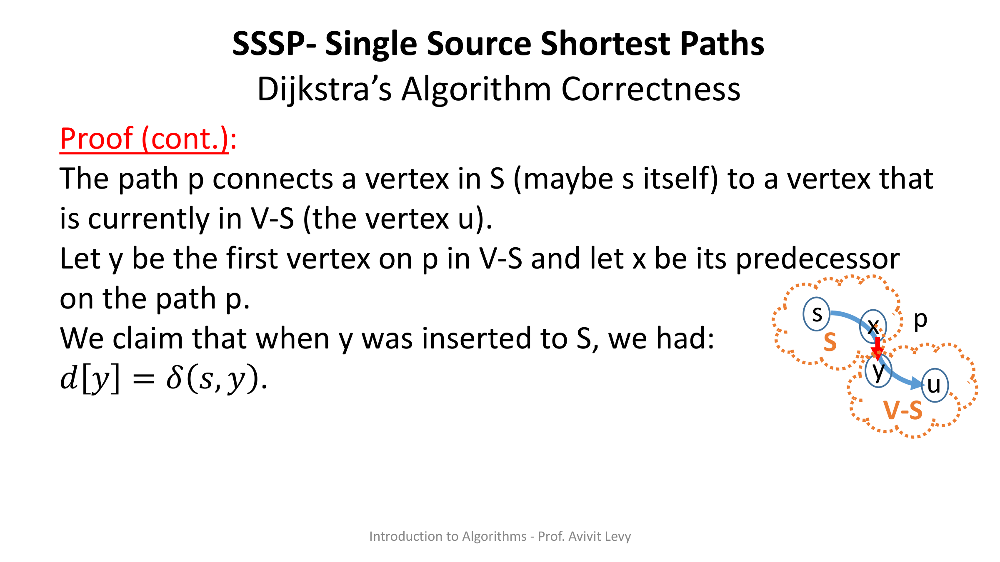
הסתירה:
- מכיוון ש-y מופיע לפני u במסלול קצר, וכיוון שהמשקלים אי-שליליים: δ(s,y) ≤ δ(s,u) … (1). כאן בדיוק נדרשת אי-שליליות המשקלים!
- לכן d[y] = δ(s,y) ≤ δ(s,u) ≤ d[u] … (2) (השוויון מ-(5), ו-δ(s,u) ≤ d[u] מתכונה 2).
- אבל u ו-y היו שניהם בתור כש-u נשלף כמינימום בשורה 5, ולכן d[u] ≤ d[y] … (3).
- מ-(2) ו-(3): d[y] = δ(s,y) = δ(s,u) = d[u] — סתירה לבחירת u (הנחנו d[u] ≠ δ(s,u)). ∎
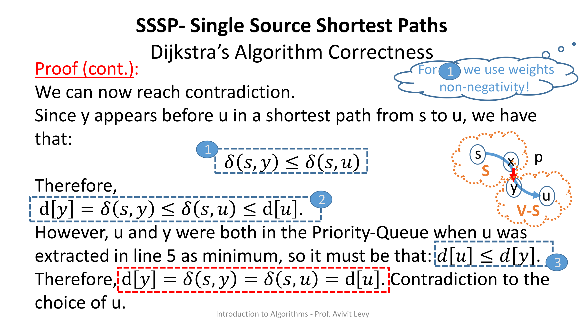
מקור: shortest-paths.pdf (עמ' 14–25)
8. למה Dijkstra נכשל עם משקלים שליליים
כל ההוכחה למעלה תלויה בנקודה אחת קריטית: המעבר (1), δ(s,y) ≤ δ(s,u), נשען על כך ש-y נמצא לפני u על המסלול, ולכן ה"המשך" מ-y ל-u אינו מוזיל את המרחק. זה נכון רק אם המשקלים אי-שליליים — קשתות שליליות היו יכולות להפוך את שארית המסלול לזולה יותר ולהפר את האי-שוויון.
מקור: shortest-paths.pdf (עמ' 4, 14, 23–25)
9. תרגילי הכיתה — רדוקציה ל-Dijkstra
כל התרגילים הבאים פותרים ברדוקציה (reduction): משנים או מרחיבים את הגרף / פונקציית המשקל, ואז מריצים את Dijkstra כ"קופסה שחורה".
תרגיל 1 — מסלול קצר העובר דרך קדקוד מ-U
נתונים גרף מכוון וממושקל G=(V,E), קבוצת צמתים U⊆V ושני צמתים s ו-t. תארו אלגוריתם שמוצא את אורך המסלול הקצר ביותר מ-s ל-t העובר דרך צומת אחד לפחות מ-U. הערה: כל המשקלים חיוביים.
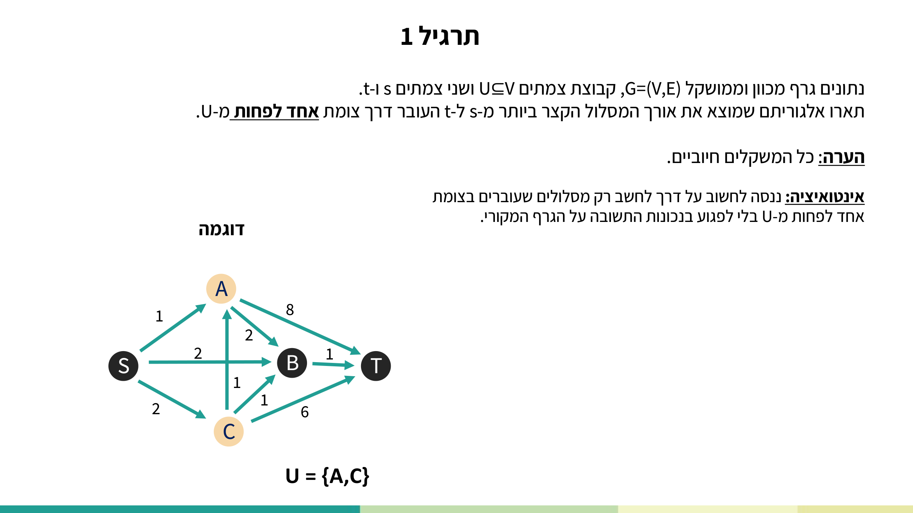
הרעיון (VERBATIM): נשכפל את הגרף ללא קדקוד t והקשתות שלו, ונחבר את שני הגרפים יחד. נריץ Dijkstra על הגרף המשוכפל מקדקוד s'.
Find_shortest_path(G, w, s, t, U):
1. V' ← {v' ∈ V | v' ≠ t}
2. E' ← {(u',v') | (origin[u'], origin[v']) ∈ E, origin[u'] ≠ t, origin[v'] ≠ t}
3. E' ← {(v', v) | v' ∈ V', v ∈ U}
3. w' ← ∅
5. for (u,v) ∈ E'
6. do if (origin[u], origin[v]) ∈ E
7. then w'(u,v) ← w(origin[u], origin[v])
8. else w'(u,v) ← 0
9. G' ← (V', E')
10. d_s' ← DIJKSTRA(G', w', s')
11. for v' ∈ V'
12. do d_s[origin[v']] ← d_s'[v']
13. π_G[origin[v']] ← π_G'[v']
14. return d_s[t]
(הערה: בשקף מופיעות שתי שורות "3." ברצף — טעות מספור מקורית שנשמרה כפי שהיא. השורה השנייה "3." מגדירה את קשתות החיבור (v', v) עבור v∈U.)
הסבר מודרך: בונים עותק שני של הגרף בלי t, ומחברים מכל קדקוד בעותק קשת במשקל 0 אל קדקודי U בגרף המקורי. כל מסלול מ-s' ל-t חייב "לקפוץ" מהעותק לגרף המקורי דרך קשת ה-0 — כלומר דרך קדקוד מ-U. כך מובטח שהמסלול עובר דרך U לפחות פעם אחת, וקשת ה-0 לא משנה את המשקל. סיבוכיות: נשלטת ע"י Dijkstra — O(V²) עם תור ליניארי, O((E+V)logV) עם ערימה בינרית.
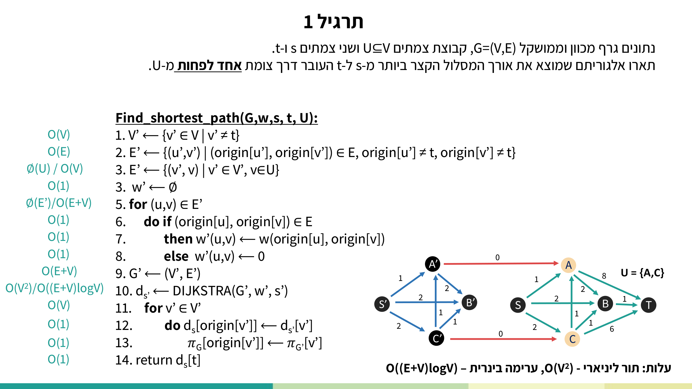
תרגיל 2 — מסלול דרך מספר מינימלי של קדקודים מ-W
נתונים גרף לא מכוון G=(V,E), תת-קבוצה W⊆V ושני צמתים s ו-t. תארו אלגוריתם יעיל למציאת מסלול מ-s ל-t, לא בהכרח קצר ביותר, העובר דרך מספר צמתים מינימלי מ-W.
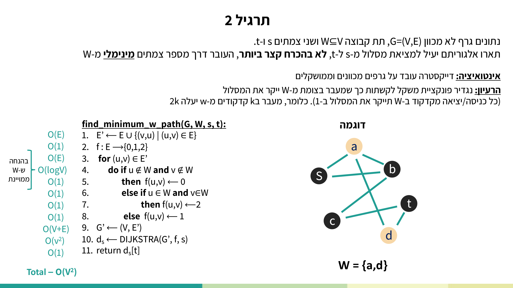
הרעיון (VERBATIM): נגדיר פונקציית משקל לקשתות כך שמעבר בצומת מ-W ייקר את המסלול (כל כניסה/יציאה מקדקוד ב-W תייקר ב-1). כלומר, מעבר ב-k קדקודים מ-W יעלה 2k.
find_minimum_w_path(G, W, s, t):
1. E' ← E ∪ {(v,u) | (u,v) ∈ E}
2. f : E → {0,1,2}
3. for (u,v) ∈ E'
4. do if u ∉ W and v ∉ W
5. then f(u,v) ← 0
6. else if u ∈ W and v ∈ W
7. then f(u,v) ← 2
8. else f(u,v) ← 1
9. G' ← (V, E')
10. d_s ← DIJKSTRA(G', f, s)
11. return d_s[t]
הסבר מודרך: ממירים את הגרף הלא-מכוון למכוון (מוסיפים שתי קשתות לכל קשת), ואז נותנים משקל 0 אם שני הקצוות מחוץ ל-W, 2 אם שניהם ב-W, ו-1 אחרת. כך מעבר דרך קדקוד מ-W "נספר": מסלול העובר ב-k קדקודים מ-W מקבל משקל ~2k, ומזעור המשקל = מזעור מספר הקדקודים מ-W. סיבוכיות: O(V²) (הבדיקה u∈W עולה O(logV) בהנחה ש-W ממוינת). נכונות: נניח בשלילה שקיים מסלול p' עם k' < k קדקודים מ-W; אז 2k' < 2k בסתירה לנכונות Dijkstra שמחזיר מסלול מינימלי. מ.ש.ל.
תרגיל 3 — השפעת שינוי פונקציית המשקל
נתון גרף קשיר לא מכוון G=(V,E) עם W: E → ℝ⁺.
א. C(e) = W(e) + r, r > 0. הוכח או הפרך: אם p מסלול קצר לפי W, אז p קצר לפי C.
ב. C(e) = W(e) · r, r > 0. אותה שאלה.
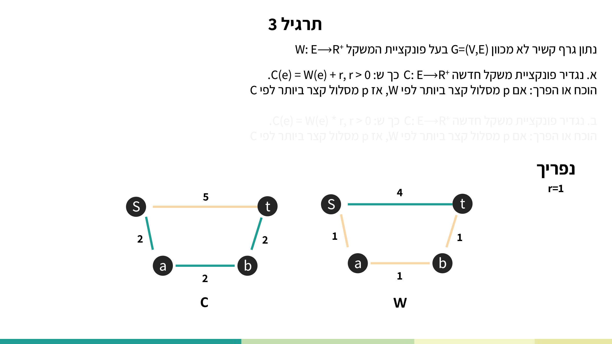
סעיף א' — נפריך (r=1): בגרף טרפז עם S–t=4, S–a=1, a–b=1, b–t=1, המסלול הקצר לפי W הוא S→a→b→t במשקל 3. אחרי הוספת r=1 לכל קשת: S–t=5, S–a=2, a–b=2, b–t=2, והמסלול הקצר לפי C הוא הישיר S→t במשקל 5 (מול 6). הוספת קבוע מענישה מסלולים עם יותר קשתות → הטענה מופרכת.
סעיף ב' — נוכיח: לכל מסלול p: C(p) = Σ C(e) = Σ w(e)·r = r·Σ w(e) = W(p)·r. מכיוון ש-r>0, היחס בין כל שני מסלולים נשמר, ולכן מסלול מינימלי לפי W נשאר מינימלי לפי C (אינטואיציה: המרה משקלים→דולרים אינה משנה את הגרף). הטענה נכונה.
מקור: lec-dijkstra.pdf (עמ' 35–56)
10. תרגיל הקורס — שאלת בית דייקסטרה
הורדות: שאלת הבית (hw-dijkstra.pdf) · הפתרון המלא (sol-hw-dijkstra.pdf).
שאלה 1 — Dijkstra בזמן O(WV + E)
יהי G=(V,E) גרף מכוון עם פונקציית משקל w: E → {0,1,…,W−1} כאשר W שלם אי-שלילי כלשהו. שנה את האלגוריתם של דייקסטרה כך שיחשב את המסלולים הקצרים ביותר מקדקוד מקור נתון s בזמן O(WV + E).

אינטואיציה (VERBATIM): נחשוב על הפעולה היקרה — תור העדיפויות — וננסה לשנות אותו כך שיתאים לעלות הרצויה. הערכים היוצאים מ-extract-min בדייקסטרה הם מונוטוניים עולים: כל ערך חדש שנוצר ב-relaxation הוא לפחות ערך הקדקוד האחרון שיצא מהתור.
הרעיון: במקום ערימה, נשתמש ב-bucket queue — מערך של רשימות מקושרות דו-כיווניות עם מפתחות שלמים בטווח [0, WV):
init(Q, V[G]) total: Θ(WV) 1. for i ← 1 to WV // Θ(WV) 2. do Q[i] ← create() // create new doubly linked list // Θ(V) 3. for each v ∈ V[G] // Θ(V) 4. do if d[v] > WV: // in Dijkstra ISS all will be ∞ in the beginning // Θ(1) 5. then 6. add(Q[WV], v) // Θ(1) 7. else 8. add(Q[d[v]], v) // Θ(1) ExtractMin(Q) total: O(WV)* 1. if isEmptyQ(Q) // Θ(1) 2. then 3. return null // Θ(1) 4. while isEmpty(Q[min]) and min < WV // O(WV) 5. do min ← min + 1 // Θ(1) 6. minV ← deleteHead(queue[min]) // Θ(1) 7. return minV // Θ(1) decreaseKey(Q, v, oldKey, newKey) total: Θ(1) 1. delete(Q[oldKey], v) // Θ(1) 2. add(Q[newKey], v) // Θ(1) isEmptyQ(Q) total: Θ(1) 1. if min = WV and isEmpty(Q[WV]) // Θ(1) 2. then 3. return true // Θ(1) 4. else 5. return false // Θ(1)
חישוב הסיבוכיות (VERBATIM):
DIJKSTRA(G, w, s) Total O(WV+E)
1. Initialize-single-source(G,s) // Θ(V)
2. S ← ∅ // Θ(1)
3. Q ← V[G] // Θ(WV)
4. While Q ≠ ∅ // Θ(V)
5. do u ← Extract-Min(Q) // 4X5 Θ(WV)
6. S ← S ∪ {u} // 4X6 Θ(V)
7. for each vertex v ∈ Adj[u] // 4X[7-8] Θ(E)
8. do Relex(u, v, w)
הסבר מודרך: ה-min ב-ExtractMin לא יורד לעולם (בזכות מונוטוניות ערכי Extract-Min), ולכן לולאת ה-while בשורה 4 של ExtractMin מבצעת סה"כ O(WV) צעדים על פני כל הריצה (ניתוח אמורטייזד). כל decreaseKey הוא O(1), ולכן כלל ה-relaxations Θ(E). האתחול Θ(WV). סה"כ: O(WV + E) — כנדרש. מ.ש.ל. (עלות מקום: O(WV).)
שאלה 2 — קשת שלילית יחידה
נתון גרף מכוון G=(V,E) עם משקלים אי-שליליים על הקשתות, למעט קשת יחידה e=(u,v) שמשקלה שלילי. נתון שאין מעגלים שליליים בגרף, ונתון צומת s. נרצה לחשב d_s[v] לכל v∈V באותה סיבוכיות זמן של דייקסטרה.

אינטואיציה (VERBATIM): דייקסטרה עובד רק על קשתות עם משקלים אי-שליליים, לכן נצטרך לשנות את הקלט כך שלא יהיו קשתות שליליות בגרף.
Find_Path(G, w, s, u, v) total O(V²)/O((V+E)logV)
1. E' ← E[G] - {(u,v)} // Θ(E)
2. G' ← (V, E') // Θ(V+E)
3. d'_s ← DIJKSTRA(G', w, s) // O(V²)/O((V+E)logV)
4. d'_v ← DIJKSTRA(G', w, v) // O(V²)/O((V+E)logV)
5. for each vertex ∈ V[G] // O(V)
6. do d_s[vertex] ← min(d'_s[vertex], d'_s[u] + w(u,v) + d'_v[vertex]) // O(1)
הסבר מודרך: מסירים את הקשת השלילית היחידה e=(u,v), מריצים Dijkstra פעמיים על הגרף הנקי G' (ממקור s וממקור v), ואז לכל קדקוד לוקחים את המינימום בין: (א) d'_s[vertex] — מסלול שלא עובר בקשת השלילית; (ב) d'_s[u] + w(e) + d'_v[vertex] — מסלול שכן עובר בה בדיוק פעם אחת.
נכונות (VERBATIM): למסלול הקצר מ-s ל-v יש שתי אפשרויות — לא עובר דרך e, או עובר דרכה פעם אחת בלבד (נתון שאין מעגלים שליליים). לפי הוכחת הנכונות של Dijkstra ולפי תכונת תת-המבנה האופטימלי, מתקיים d_s[vertex] = min(d'_s[vertex], d'_s[u] + w(e) + d'_v[vertex]). מ.ש.ל.
מקור: hw-dijkstra.pdf (עמ' 1), sol-hw-dijkstra.pdf (עמ' 1–4)
11. בדיקה עצמית
בהרצה על גרף ההרצאה (S→A=1, S→C=2, C→A=1, C→B=1, A→B=2, A→T=8, C→T=6, B→T=1), מהו סדר החילוץ של Extract-Min?
באיזה שלב בהרצה מתבצע העדכון הסופי d(T)=4, ודרך איזה קודם (π)?
באיזו נקודה בדיוק בהוכחת הנכונות נדרשת ההנחה שהמשקלים אי-שליליים?
בגרף צפוף שבו |E| ≈ |V|², איזה מימוש תור נותן את הסיבוכיות הטובה יותר?
בשאלת הבית (Dijkstra ב-O(WV+E)) — מדוע לולאת ה-while ב-ExtractMin לא הופכת את הריצה ליקרה מדי?